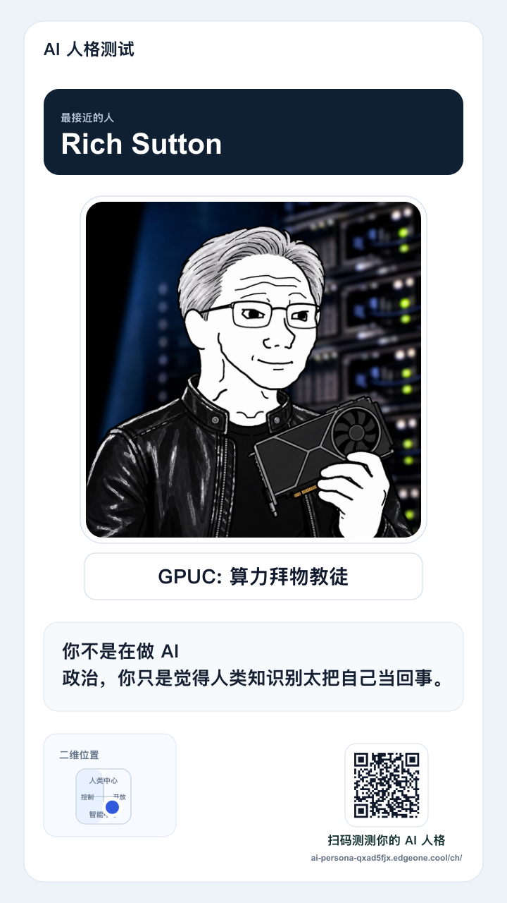
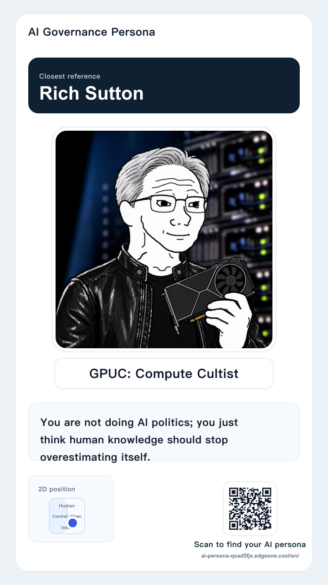
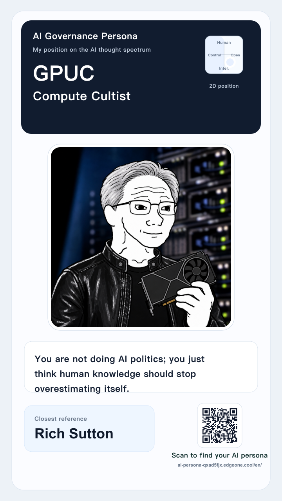

GPUC Share Demo
All cards keep the 2D coordinate map smaller than the profile picture, make the profile picture dominant, state the closest reference clearly, and use zh/en-specific QR codes.



All cards keep the 2D coordinate map smaller than the profile picture, make the profile picture dominant, state the closest reference clearly, and use zh/en-specific QR codes.


